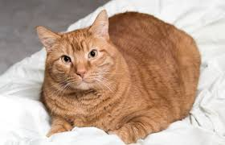

Bacon Q Dog

Bacon Q. Dog is a 9yr old labradoodle. He prefers to spend his days lounging among the three different beds/couches that his family has gifted him. He enjoys a walk or two around the neighborhood, as long as he can pretend that he doesn't see any of the other animals to avoid the embarrassment of not wanting to admit he has no wolf-like skills in chasing them.
At night just as the rest of the family is ready to relax, Bacon suddenly wants to release all of his energy. He will place his toys on a mini couch and frantically drag the couch around, giving his toys "a ride." There is also a lot of rolling. Lots and lots of rolling.
Photo Gallery
Likes
- Belly rubs
- Playing tug-of-war
- Sneaking onto the couch
Brul Cat

Brul, the captivating black and brown cat, boasts a sleek coat that seamlessly blends the darkness of midnight and the warmth of toasted brown hues. Whispers circulate in the neighborhood about Brul's penchant for appearing mysteriously on rooftops, earning this feline a reputation as the rooftop guardian.
Known as Brul the Dreamweaver, this enigmatic black and brown cat is rumored to have the ability to weave dreams into the night. Residents claim to have experienced vivid and whimsical dreams after encountering Brul, leaving an air of enchantment surrounding this magical feline.
Photo Gallery
Likes
- Cat Towers
- Looking at cameras
- Cardboard boxes
Garfield Cat

Garfield, the orange tabby cat, is known for his laid-back and sarcastic personality. He often displays a love for lasagna and a disdain for Mondays, capturing the hearts of fans with his humorous and relatable demeanor.
Garfield is famously depicted as a cat who loves to nap and avoid any form of physical exertion. His aversion to Mondays is a reflection of his preference for a leisurely lifestyle, often spending his time lounging around the house and scheming to get out of any kind of work or activity.
Photo Gallery
Likes
- Days that arent monday
- John
- Lasanga